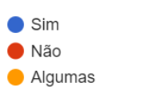

Resultados
“Você sabe as consequências de não utilizar a coleta seletiva?”
“Você sabe o que significa as cores de cada um dos lixos da coleta seletiva?”
“Você pratica a "coleta seletiva" em sua casa ou na escola?”

Resumo
Com essa pesquisa, conseguimos perceber que nem todo mundo tem conhecimento sobre a coleta seletiva ou reciclagem. Mesmo muitas pessoas sabendo sobre o assunto, vemos no dia-a-dia lixo descartado da maneira errada.